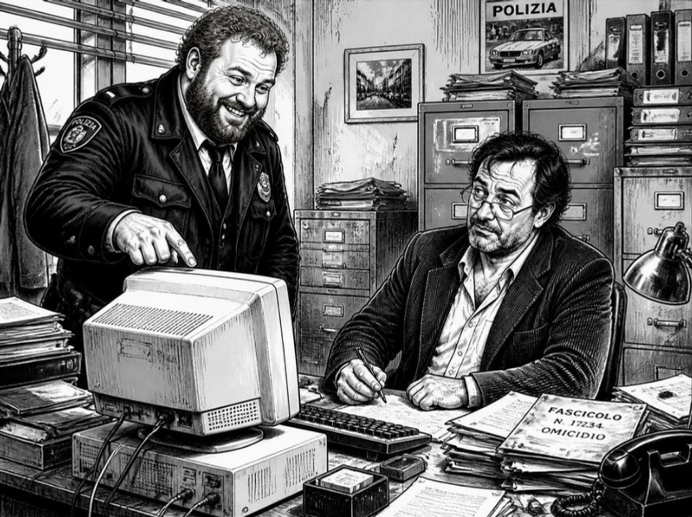

Fossa Etrusca. Martedì.
Il Ministero ha mandato il futuro.
Dottore, fa tutto da solo! Gli racconti il fatto e lui scrive il verbale!
Tutto da solo.
Come i guai.
Signora Iannaccone, via dei Tigli. Dice che il vicino le ruba il basilico dal balcone. Da tre anni. Lo sa perché il vicino fa il pesto buono.
> Segnalazione di presunto furto di materiale vegetale.
> Rischio: BASSO. Priorità: NESSUNA.
Ha capito il furto. Non ha capito il pesto.
Dottore, è una macchina.
Appunto. La signora Iannaccone non chiedeva giustizia, Graziella. Chiedeva qualcuno che la stesse a sentire.
«I got to keep moving, blues falling down like hail» — Robert Johnson